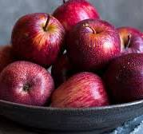
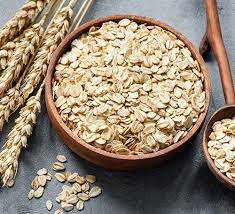

Oranges
Oranges have a very fast growth rate, hence they are preferred by farmers for sale

I Love Them very much
Nissan's are made in japan
Oranges have a very fast growth rate, hence they are preferred by farmers for sale
What are the benefits of eating apples? Apples: Benefits, Nutrition, and Calories Apples are a good source of nutrients, including fiber, vitamin C, and antioxidants which can help support healthy digestion, brain health, and weight management. There is evidence that apples can also protect against certain chronic diseases, including cancer, heart disease, and type
My Computer is HP
Oats are high in antioxidants called avenanthramides, not found in other cereal grains. These antioxidants reduce inflammation and relax arteries, improving heart health. The soluble fiber in certain oats can keep blood sugar from rising after a meal.
